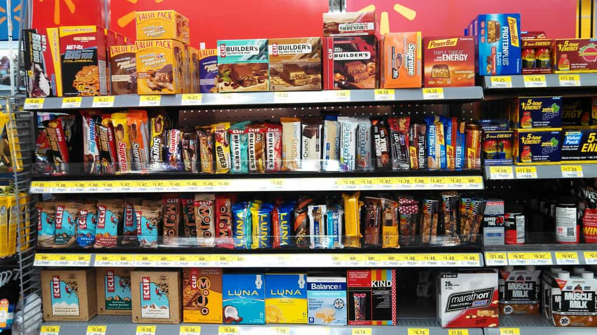

This account syndicates news from other media outlets.


Many gym-goers consume protein to build muscle and rebuild body tissue. Some will also take supplements, bars and powders to supplement their everyday diets. But can doing this be detrimental to your health?
This year, there have been heart-breaking cases where fitness fans have reportedly “overdosed” on protein.
In March, a dad was on the brink of death after consuming a weight loss product. Two months later, a bodybuilder lost her life after taking fitness supplements. And a few weeks ago, 22-year-old Fabien Van Johnson passed away after consuming an excess of protein powder.
These tragic instances may prevent others from using protein-filled products.

So just how great is the danger of protein?
The Daily Star Online spoke to Dr Daniel Fenton, of the London Doctors Clinic, about the risks. While Dr Fenton reassured that our bodies tend to regulate our protein levels, he did point out that there was still a risk of overdosing.
He said: “The body is phenomenal machine that utilises only what it requires and is very good at getting rid of excess products, which is why high protein diets are fairly (but not totally) harmless.
“But truthfully, too much protein can be dangerous. “Everything in excess can lead to severe consequences – even too much water can cause low sodium, brain swelling and ultimately death!!”
The medical expert revealed that taking in too much protein can lead to kidney stones or gout. While these illnesses are not directly fatal, they can spiral into more serious problems. Killer conditions, including sepsis and kidney failure, can both be brought on by the stones.
Dr Fenton explained: “Put simply, protein consumption generates a great deal of varying acids , which is filtered by the kidneys. To compensate for the acid , bones release calcium to buffer the acid. The extra calcium being processed through the kidneys can contribute to calcium based kidney stones. Proteins are also converted into purines, and subsequently uric acid, this can cause uric acid based kidney stones and even gout.”
Even though you should be cautious when using protein products, evaluating how much is oo much can be difficult.
The expert said: “You may have heard of cases in the recent media of people dying from consuming excess protein.
“It would be extraordinarily difficult to presume exactly what ‘excess’ means in these unfortunate circumstances.”
The recommended daily intake of protein is 0.8 grams of protein per kilogram of body weight – which amounts to 56 grams per day for the average man or 46 grams for the average woman.
It’s best to bear these guidelines in mind when consuming food or products that contain protein.
Don’t Miss: Protein Bars Are Worse Than Candy